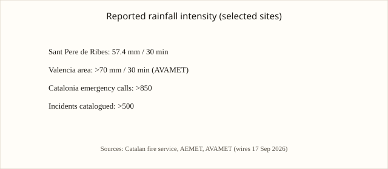

Cataluña · Valencia · Murcia · 16–17 septiembre 2026
Las lluvias torrenciales dejan un muerto en Olivella (Barcelona) y centenares de incidencias en el litoral mediterráneo.
_-_panoramio.jpg)
images/flood-hero.svg.
Lo que coincide entre las redacciones
En la madrugada del jueves 17 de septiembre de 2026 los Bomberos de la Generalitat localizaron el cuerpo sin vida de un hombre en Olivella, comarca del Garraf, a unos 40 kilómetros al oeste de Barcelona. El vehículo en el que viajaba había sido arrastrado por una riera la noche anterior. La Policía Mossos d’Esquadra confirmó que se trataba del conductor varón. AEMET había emitido avisos de nivel rojo. Los servicios de emergencia de Cataluña registraron más de 850 llamadas y catalogaron más de 500 incidencias. En la Comunidad Valenciana, AVAMET midió más de 70 mm de precipitación en media hora en varios municipios. En Sitges, el desbordamiento de la Riera de Ribes obligó a la autoevacuación de unas 270 personas de un camping. Se cerraron estaciones de metro en Barcelona, se desviaron autobuses, se interrumpieron trenes regionales y se cancelaron o retrasaron vuelos en El Prat. Pedro Sánchez advirtió de “situaciones muy complicadas”.
Las cifras de llamadas, de mm de lluvia y de la localización del cadáver aparecen de forma coincidente en BBC, Europa Press, La Vanguardia, Catalan News y agencias internacionales.
Lo que es solo una cita o una estimación
Cualquier comparación directa con la DANA de 2024 en Valencia es un marco interpretativo, no un dato de este episodio. Las cifras de 850 llamadas y 500 incidencias son las reportadas en la primera ventana de 24 horas.
Mecanismo que el lector necesita
El litoral mediterráneo es propenso a episodios de lluvia convectiva intensa. Las rieras pueden pasar de casi secas a caudales peligrosos en minutos. Los sistemas de alerta temprana pretenden reducir la exposición. La DANA de 2024 dejó memoria institucional; este episodio de septiembre de 2026 es de menor escala en víctimas pero reactiva los mismos protocolos. Los datos de intensidad proceden de redes de observación automática y son medibles.
Lo que esta historia no es
No es un balance definitivo de daños. No es una atribución de culpa a un nivel de gobierno por el momento de las alertas. La imagen superior es una vista de la costa de Barcelona de 2014, de tipo y localización.

Artículos fuente y puntuaciones
| Medio | Titular | T | N | C |
|---|---|---|---|---|
| BBC | One dead after torrential rain and flash floods hit Barcelona region | 96 | 0 | 100 |
| Europa Press | Las intensas lluvias dejan en Cataluña, C. Valenciana y Murcia un fallecido, clases suspendidas e inundaciones | 95 | 0 | 100 |
| Catalan News | One dead as heavy rain hits Catalonia | 94 | 0 | 100 |
| AFP / The Local | One dead near Barcelona as heavy rain lashes Spain's Mediterranean | 95 | 0 | 100 |
Imágenes: Wikimedia Commons (costa de Barcelona, 2014) vía Special:FilePath; gráfico original local. Sin crossorigin. onerror a SVG locales.